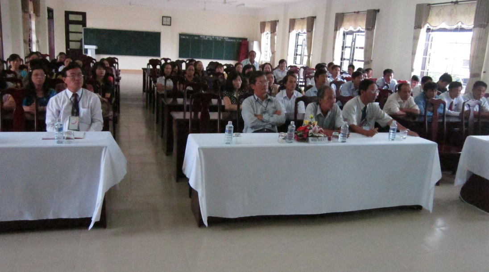
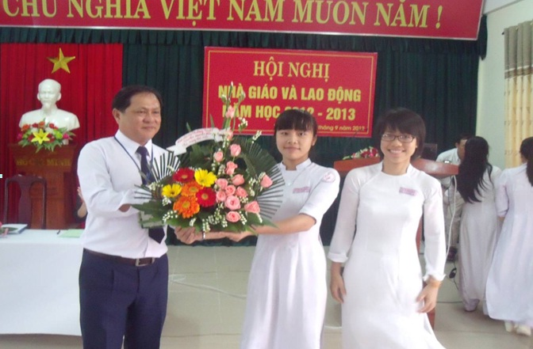
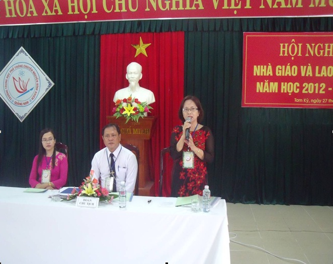
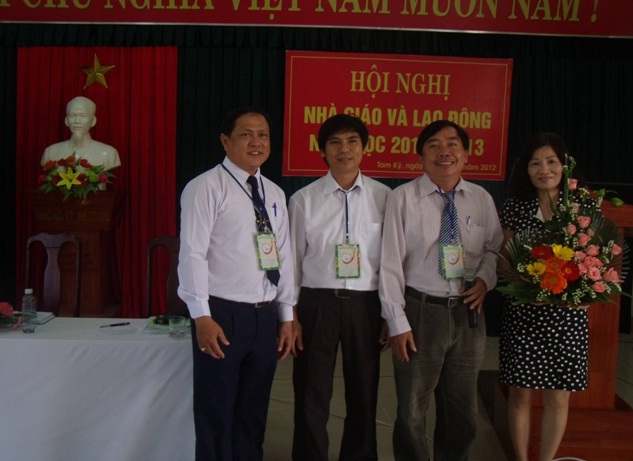
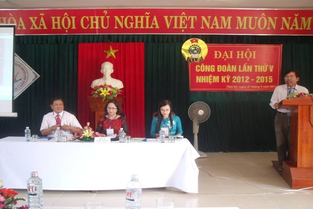
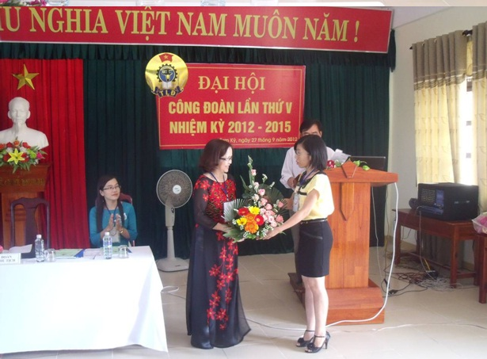

Hội nghị nhà giáo - lao động năm học 2012 - 2013 và đại hội Công đoàn trường nhiệm kì 2012 - 2015

Viết bởi Administrator Thứ hai, 08 Tháng 10 2012 10:36
Nhiều ý kiến tham gia thảo luận của NG&LĐ góp ý về các biện pháp, giải pháp thiết thực nhằm đưa hoạt động của trường vào nề nếp. Bên cạnh đó, nhiều ý kiến thể hiện sự băn khoăn trăn trở liên quan đến công tác bồi dưỡng học sinh giỏi, công tác thi tuyển chọn đội tuyển dự thi học sinh giỏi quốc gia...hiện vẫn còn bất cập, ảnh hưởng đến thành tích chung, từ đó, đề nghị nhà trường quan tâm hơn đến công tác này.
Hội nghị cũng đã tiến hành bầu cử Ban thanh tra nhân dân nhiệm kì 2012-2014, gồm 03 thành viên: Cô Nguyễn Thị Ngọc Én, Thầy Nguyễn Thành Khoa, Thầy Nguyễn Hoàng Nam.

Theo Báo cáo tổng kết nhiệm kì qua, công đoàn đã hoàn thành tốt các chương trình, mục tiêu hoạt động công đoàn đã đề ra trong Nghị quyết đại hội IV và đã đạt được thành tích cao, đạt nhiều giải thưởng trong các phong trào hoạt động do công đoàn cấp trên tổ chức, trở thành đơn vị dẫn đầu về các phong trào thi đua của Ngành: Đạt danh hiệu Công đoàn vững mạnh xuất sắc. Năm học 2011-2012 được tặng Cờ thi đua của Tổng liên đoàn lao động Việt Nam.
Trên cơ sở phát huy những kết quả đã đạt được, phương hướng hoạt động của nhiệm kì mới cũng chú ý đến một số hoạt động trọng tâm và các giải pháp kèm theo: Chăm lo đời sống vật chất, tinh thần cho CĐV, tổ chức thăm quan dã ngoại, vận động CĐV học tập nâng chuẩn, công tác xây dựng Đảng...
Một số ý kiến CĐV góp ý cho phương hướng hoạt động công đoàn nhiệm kì mới như: đề nghị tăng cường đổi mới nội dung, phương thức hoạt động công đoàn, điều chỉnh một số chỉ tiêu cho phù hợp điều kiện thực tế... đã được Đại hội tiếp thu đưa vào nghị quyết Công đoàn nhiệm kì 2012-2015.
MỘT SỐ HÌNH ẢNH HỘI NGHỊ NG-LĐ VÀ ĐẠI HỘI CÔNG ĐOÀN





- 05/12/2012 21:59 - Giới thiệu Luật Công đoàn sửa đổi 2012
- 05/12/2012 06:25 - Trung tâm Phát triển nguồn nhân lực CLC làm việc v…
- 05/12/2012 06:17 - Tin an toàn giao thông
- 12/11/2012 08:30 - Kết quả xếp giải thi HSG lớp 12
- 10/11/2012 08:29 - Kết quả thi HSG 12 năm học 2012-2013
- 05/10/2012 17:08 - Bí thư tỉnh ủy Nguyễn Đức Hải dự lễ kỷ niệm 10 năm…
- 03/09/2012 00:00 - Nét bút tri ân - Chia sẽ lòng tri ân